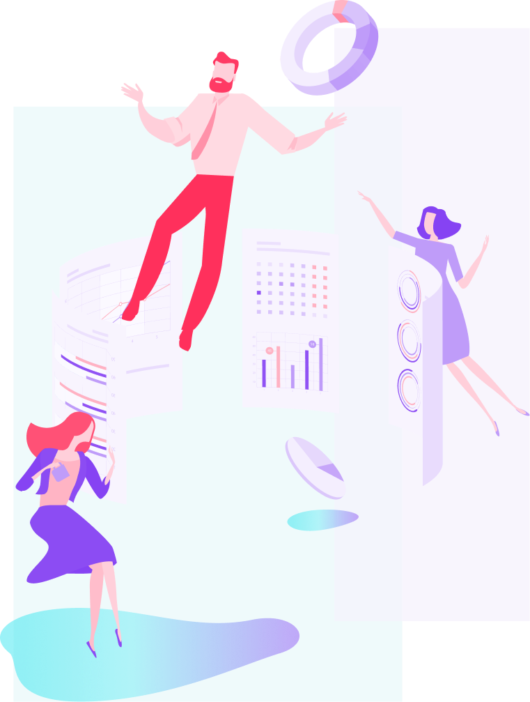
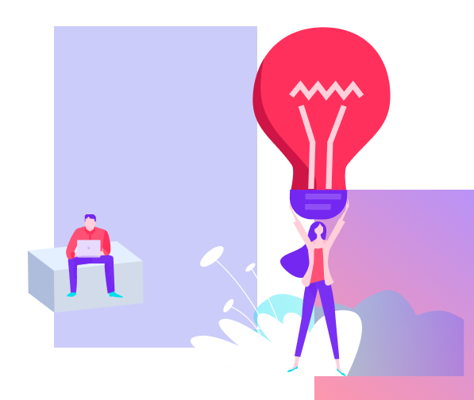
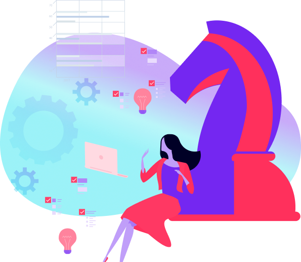
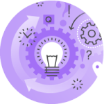
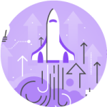
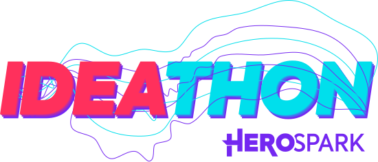
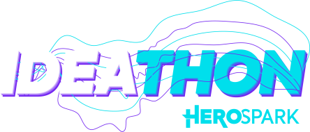
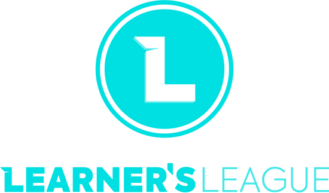
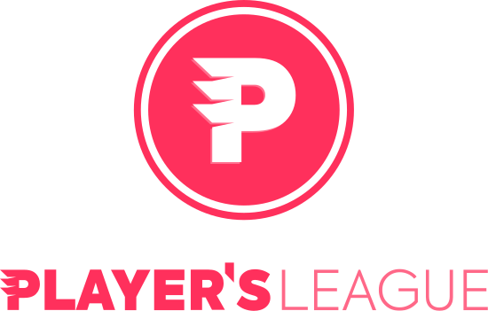
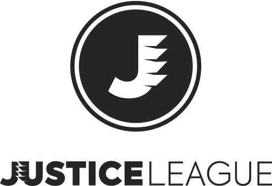

Sabemos que a Jornada do Empreendedor não é algo fácil.
São diversos obstáculos e desafios que fazem com que muitos desistam na metade do caminho e voltem para seus empregos formais, nunca realizem seus sonhos e sintam-se eternamente frustrados por isso.
Após acompanharmos milhares de empreendedores errando e acertando, queremos te ajudar a encurtar este percurso, ter mais acertos do que erros, economizar tempo e dinheiro no caminho para o sucesso.


Você já parou para pensar o que separa os empreendedores de sucesso dos que não saem do mesmo lugar?
A verdade é que os empreendedores de sucesso possuem uma estratégia e uma metodologia nos bastidores.

E queremos te oferecer essa metodologia por meio da Jornada do Herói HeroSpark
Acompanhando você desde o momento em que ainda está apenas insatisfeito com a sua posição atual em trabalhos formais, mas acredita que pode ter um negócio próprio, até o momento que você poderá ter um negócio lucrativo, escalável e de alto faturamento.
E isso nós faremos por meio de:
metodologia de sucesso para
negócios digitais

Comunidades gratuitas que reúnem empreendedores que querem fazer a diferença
um time de especialistas que irá te auxiliar com as suas vendas

tecnologia certa para escalar o seu negócio digital
Tem algo no fundo do seu coração que diz para ter um negócio próprio, mas não faz ideia do que fazer?
Nós podemos te ajudar!
Independente da etapa da jornada que você esteja, nós podemos te ajudar!
Existem 2 grupos de
empreendedores:
Os que se arriscam iniciando seus negócios sozinhos, sem apoio, perdem tempo e dinheiro, aprendendo com seus erros e acertos
Os que encontram mentores confiáveis e encurtam seu caminho, economizando tempo e dinheiro
Você escolhe a qual grupo
quer pertencer.
Após analisarmos milhares de empreendedores de sucesso, observamos que todos eles percorreram um caminho similar…
E pensando exatamente neste caminho, desenvolvemos Soluções Específicas e Direcionadas para cada uma das etapas da Jornada do Empreendedor.
Este percurso chamamos de Jornada do Herói HeroSpark, um conjunto de programas e comunidades exclusivas e gratuitas, onde serão providenciados conteúdos relevantes, momentos de reflexão e troca de experiências entre os membros.
O melhor caminho na hora de criar um negócio digital de sucesso

O começo da jornada

o começo da jornada
A Learner’s League é uma comunidade para você, que já sabe que é bom em alguma coisa e
quer
transformar isso em um negócio digital, mas não sabe por onde começar.
Aqui, você terá contato com outros empreendedores que estão com o mesmo objetivo que o seu, além de contato com produtores digitais que já atingiram o sucesso e estarão dispostos a trocar informações e experiências para que você comece a construir o seu negócio digital.
E para isso, nós apresentamos o programa de imersão online 100% gratuito, o Ideathon.
O programa tem como objetivo fazer com que você identifique exatamente qual é o seu conhecimento que tem mais potencial de ser lucrativo e aprenda de que maneiras você pode transformar isso em algo muito maior e rentável, um negócio digital
Para te ajudar nessa etapa, nós apresentamos um programa especial para você iniciar a sua jornada empreendedora:

Amadurecendo a ideia e criando um negócio
o começo da jornada
A Learner’s League é uma comunidade para você, que já sabe que é bom em alguma coisa e quer transformar isso em um negócio digital, mas não sabe por onde começar.
Aqui, você terá contato com outros empreendedores que estão com o mesmo objetivo que o seu, além de contato com produtores digitais que já atingiram o sucesso e estarão dispostos a trocar informações e experiências para que você comece a construir o seu negócio digital.
Além da construção de uma rede de contatos robusta, você vai ter acesso a conteúdos que vão te levar do zero até suas primeiras vendas, exclusivos para quem é membro dessa comunidade.
Para te ajudar nessa etapa, nós apresentamos um programa especial para você iniciar a sua jornada empreendedora:
O programa vai triplicar as chances do seu negócio dar certo

Consolidando o negócio e melhorando resultados
Amadurecendo a ideia e criando um negócio
A Builder’s League é a comunidade para você que já começou a dar os primeiros passos e realizou as primeiras vendas, mas vê que seus resultados não são expressivos e quer melhorá-los.
Aqui você terá acesso a informações e conteúdos que o ajudarão a escalar suas vendas e consolidar o seu produto no mercado digital.
Além disso, você vai ter a oportunidade de se juntar com outros empreendedores digitais que também estarão em busca de consolidar seus negócios, junto de produtores que já alcançaram o sucesso e serão de grande ajuda para você melhorar os seus resultados.
Como forma de auxiliar você nessa etapa da jornada, nós entregamos alguns produtos que consideramos fundamentais para a construção de um negócio digital:
Ferramenta voltada para criação e estruturação de funis de venda de alta conversão, sem a necessidade de contratar programadores ou designers.
Ferramenta voltada para criação e estruturação de funis de venda de alta conversão, sem a necessidade de contratar programadores ou designers.
Ferramenta voltada para criação e estruturação de funis de venda de alta conversão, sem a necessidade de contratar programadores ou designers.

Tomando o seu empreendimento ainda maior
Tomando o seu empreendimento ainda maior
A Player’s League é pra você que já apresentou bons resultados, mas eles ainda não condizem com as suas expectativas.
Nessa comunidade você terá acesso a conteúdos que te ajudarão a transformar o seu negócio em uma máquina de vendas, de forma que você possa começar a viver dele como principal fonte de renda.
Além disso, o contato com profissionais do mercado e outros empreendedores que estão na mesma etapa que você será essencial para que você escale o seu negócio ainda mais.
Para te ajudar, além da participação na comunidade, nós providenciamos uma ferramenta que julgamos ser essencial na hora de amadurecer o seu produto e transformá-lo em algo muito maior:
A rede de afiliados mais exclusiva da América Latina, onde somente pessoas com resultados comprovados podem fazer parte, de forma que os produtos hospedados pelos clientes HeroSpark sejam revendidos apenas pelos melhores

Seu empreendimento já é grande, mas pode ser maior
o começo da jornada
A Learner’s League é uma comunidade para você, que já sabe que é bom em alguma coisa e
quer
transformar isso em um negócio digital, mas não sabe por onde começar.
Aqui, você terá contato com outros empreendedores que estão com o mesmo objetivo que o seu, além de contato com produtores digitais que já atingiram o sucesso e estarão dispostos a trocar informações e experiências para que você comece a construir o seu negócio digital.
E para isso, nós apresentamos o programa de imersão online 100% gratuito, o Ideathon.
O programa tem como objetivo fazer com que você identifique exatamente qual é o seu conhecimento que tem mais potencial de ser lucrativo e aprenda de que maneiras você pode transformar isso em algo muito maior e rentável, um negócio digital
Para te ajudar nessa etapa, nós apresentamos um programa especial para você iniciar a sua jornada empreendedora: